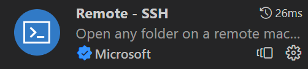

OpenCV4开发的环境配置
折腾一下午，总算配好了。
本环境配置方案为VirtualBox虚拟机（ubuntu20.04）+外部vscode使用SSH远程连接虚拟机编辑
前置准备
其中OpenCV和OpenCV_Contrib下载source code（zip）
注意两者的版本号要一致，教程以4.5.5为例。
虚拟机安装
软件安装
直接默认即可，安装目录可自定义
虚拟机安装
点击新建，配置如图。
文件夹是存放虚拟机文件的位置，可自定义。
内存分配按需即可，本人分配为2048MB
虚拟硬盘创建，本人分配为30G，实际20G足够用，看自己需要。
创建好虚拟机，到虚拟机设置中挂载iso，随后即可启动虚拟机。
安装好ubuntu后，即可进入下一步。
安装依赖项
1 | sudo apt-get install build-essential |
opencv库编译与配置
将前面下载的OpenCV和OpenCV_Contrib导入虚拟机解压，目录可自定义。
注意OpenCV_Contrib应当解压到opencv文件夹内，即如图：
上图文件夹内新建文件夹build，并在终端打开。
在终端输入以下指令编译：
1 | cmake .. |
等待编译完成，此处编译时间较长，需要等待。
将opencv库添加至系统路径：
1 | sudo gedit /etc/ld.so.conf.d/opencv.conf |
往opencv.conf中添加：
1 | /usr/local/lib |
保存后执行下面命令使配置生效：
1 | sudo ldconfig |
配置bash：
1 | sudo gedit /etc/bash.bashrc |
在文件末尾加上：
1 | PKG_CONFIG_PATH=$PKG_CONFIG_PATH:/usr/local/lib/pkgconfig |
保存后执行下面命令使配置生效
1 | source /etc/bash.bashrc |
更新配置：
1 | sudo updatedb |
接着在终端中打开opencv-4.5.5/sample/cpp/example_cmake。
新建文件夹build，在终端打开后执行：
1 | make -j8 |
若出现Hello OpenCV则说明配置成功。
外部VSCode配置
SSH远程连接
到虚拟机设置中将网络连接方式设置为桥接（如果本步有问题可以重启一次虚拟机确保配置更新）。
在虚拟机中查看ip
1 | sudo apt install net-tools |
直接使用ifconfig是没有用的，因为没有安装工具包。
注意ip是第一个，且不是127.0.0.1的那个。
接着到vscode中安装扩展包。

安装完成后新建远程连接。
输入以下指令即可连接（若有密码会提示需要输入密码）：
1 | ssh <user_name>@<your_ip> |
免密连接
在windows的cmd中输入：
1 | ssh-keygen |
其中
接着到虚拟机的终端中输入：
1 | touch ~/.ssh/authorized_keys |
然后再打开虚拟机的id_rsa.pub检查是否与windows的一致，不一致直接到windows的用户文件夹下的.ssh文件夹复制id_rsa.pub内容到虚拟机的id_rsa.pub即可。
可使用以下命令打开编辑：
1 | gedit ~/id_rsa.pub |
接着重启vscode，若不提示输入密码则配置成功。
编译配置
以下仅为示例，按需配置。
.vscode/c_cpp_properties.json
1 | { |
.vscode/task.json
1 | { |
GUI界面调用
安装Xming，安装默认即可，目录可自定义。
接着启动Xlaunch。
display number一般默认为0，无需修改。
后面的也是默认配置即可。
然后到Xming的安装目录打开X0.host文件，将你的虚拟机ip填入，即：
1 | localhost |
localhost是本来文件中就有的，不需要动。
随后到vscode中安装Remote X11(SSH)插件。
安装完成后打开ssh的设置。
打开.ssh/config，将配置修改为：
1 | Host <your_ip> |
保存后到虚拟机终端内输入：
1 | sudo gedit ~/.bashrc |
在最后加一行：
1 | export DISPLAY="localhost:10.0" |
保存后更新配置：
1 | source ~/.bashrc |
输入下面指令验证配置：
1 | echo $DISPLAY |
若显示：
1 | localhost:10.0 |
则说明配置成功。
接着在.vscode/launch.json中的env增加"DISPLAY":"localhost:10.0"
即：
1 | { |
最后在vscode的终端中输入xclock，若显示下图则说明GUI配置成功。